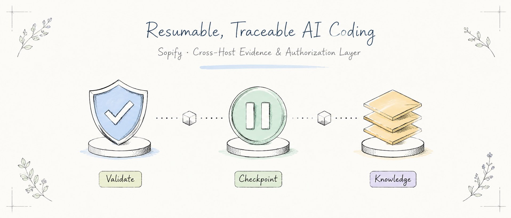
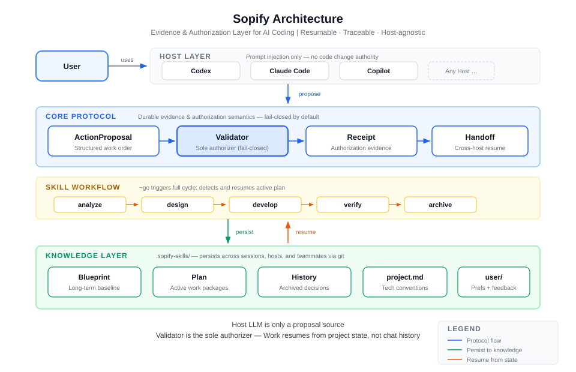

Premature coding
When a requirement or key choice is unresolved, Sopify pauses instead of guessing.
Sopify / workflow protocol
Ask before writing. Resume after approval. Plans, decisions, and verification evidence stay with your repo—even when you switch AI coding tools.
No new editor. No new CLI. Start with ~go in the host you already use.

What it prevents
Sopify keeps fast AI coding from outrunning the facts, the decision, or the project history.
When a requirement or key choice is unresolved, Sopify pauses instead of guessing.
Plans and evidence live with the repo, so a new session, tool, machine, or teammate can continue from the same record.
Requirements, tradeoffs, reviews, and verification evidence remain inspectable project assets.
How it works
Simple requests stay simple. Work that needs a plan moves through four explicit stages and pauses when you need to decide.
Clarify the outcome, evidence, and unresolved boundaries.
Choose the smallest sufficient path and make decisions visible.
Implement the approved tasks and attach focused verification.
Close the plan only when delivery evidence is ready.

Product form
Sopify is a workflow protocol layer for the AI coding host you already use. It supplies shared rules and
preserves plans, decisions, and verification evidence as project files in .sopify/.
Ask to continue or run ~go in a supported host to resume an unfinished plan. A local handoff pointer
provides a same-workspace resume hint.

Open the technical architecture →Install
The installer checks for Python 3.11 or newer before downloading. You can inspect the script before running it.
curl -fsSL https://github.com/evidentloop/sopify/releases/latest/download/install.sh | bash -s -- --target codex:en-USFAQ
No. Sopify installs workflow instructions and project conventions into supported AI coding hosts.
No. Ordinary questions and small fixes are handled directly. Sopify resumes an unfinished plan only when you ask to continue or use ~go.
Plans, decisions, and verification receipts can be tracked under .sopify/. The active-plan and handoff pointers stay gitignored by design.
Codex, Claude, and Qoder have protocol-verified paths. Copilot currently has baseline prompt support; its payload path is more limited.
No. Sopify works on its own. EvidentLoop is an optional companion for auditable reviews of local Git changes.
{kind=link}